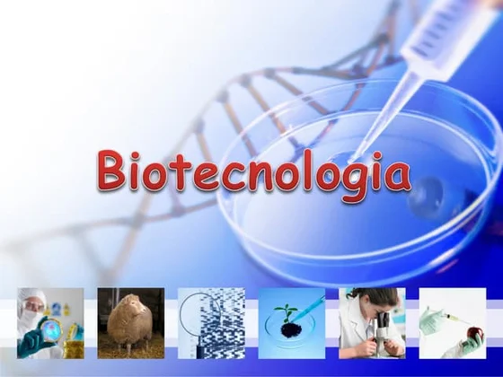

PROJETO AGRINHO 2025
FESTEJANDO A CONEXÃO ENTRE O CAMPO - CIDADE

FESTEJANDO A CONEXÃO ENTRE O CAMPO - CIDADE
BIOTECNOLOGIAS:
AS BIOTECLOGIAS É MUITO IMPORTANTE PARA O CAMPO. PARA A CIDADE PRECISSA DE UM ADUBO, SEMENTE PARA O CAMPO E MUITO ULTIL PARA A CIDADE OS PRODUTOS TRANGÊNICOS DERIVADOS DE SOJA COMO CARNE, SALDADOS ENTRE OUTRAS COMIDAS E MUITO PARA ESTUDO SOBRE:VERDE: MAS TRATADA A AGRICULTURA COMO OS LEITES CARNES BOVINAS SUINAS A OUVINOS PARA A CIDADE USO DE PLANTA GENETICAMENTE MODIFICADAS
BIOTECNOLOGIA VERMELHA: MAS TRATADA A SAÚDE COMO REMEDIO ATIBIOTICOS E PARA O CAMPO VACINAS REMEDIOS PARA OS ANIMAIS
AZUL: MAS TRATADA PELA VIDA MARINHA CUIDADOS DAS ÁGUAS RIOS E LAGOS
BIOCTENOLOGIA AMARELA: E PROPRIA POS ALIMENTOS FEMENTADOS COMO CERVEJA, QUEIJO, PÃO ENTRE VARIOS ALIMENTOS FERMENTADO
A BIOTECNOLOGIA BENEFECIA EM AMBOS A CIDADE E O CAMPO AJUDA AS CIDADES COM OS ALIMENTOS TRANGENICOS SAÚDE DAS PESSOAS E PARA O CAMPO A AGRICULTURAS E PECUARIAS CARNES COUROS LEITE ENTRE OUTROS ALIMENTOS:
